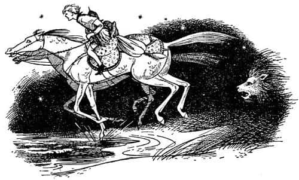
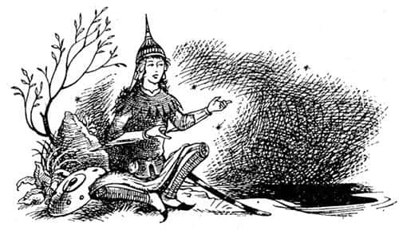

Yol Kenarı Macerası
Shasta, ertesi gün yüzüne yumuşak ve ılık bir şeyin dokunmakta olduğunu hissederek uyandığında, neredeyse öğlen olmuştu. Gözlerini açtı ve kendini bir atın uzun yüzüne bakarken buldu; atın burnu ve dudakları neredeyse kendininkine değiyordu. Önceki gecenin heyecanlı olaylarını hatırladı ve kalktı, oturdu. Fakat bunu yaparken inlemişti.
“Of Bree” diye soludu. “Ağrıyor her tarafım. Güçlükle hareket edebiliyorum.”
“Günaydın küçük” dedi Bree. “Biraz tutukluk hissedeceğinden korkuyordum. Düştüğün için olamaz. On kereden fazla düşmedin ve neredeyse düşmenin bir zevk olduğu yumuşak, hoş ve yatak gibi çimlerin üstüne düştün. Senin için en kötü olabilecek olan düşüşündeyse, katırtırnaklarının yumuşaklığı işine yaradı. Hayır; başlangıçta zor olan binmektir, düşmek değil. Kahvaltıdan ne haber? Ben kahvaltı ettim.”
“Oh, kahvaltının canı cehenneme. Her şeyin canı cehenneme” dedi Shasta. “Sana hareket edemediğimi söylüyorum.” Ancak At, burnu ve ön ayağının biriyle, onu kaldırana kadar nazikçe iteledi. Sonra Shasta etrafına bakındı ve nerede olduklarını gördü. Arkalarında küçük bir koru vardı; önlerinde, bir uçurumun kenarına doğru uzanan, beyaz çiçeklerle beneklenmiş çimenlik vardı. Çok aşağılarında, kırılan dalgaların seslerinin çok hafif duyulduğu deniz uzanmaktaydı. Shasta, böylesine büyük bir denizi, bu kadar yüksekten hiç görmemişti. Ve bu kadar renkli olduğunu, rüyasında görse inanmazdı. Her iki tarafta da, bir burnun arkasından diğer bir burun uzanıyordu. Kıyı boyunca bazı yerlerde beyaz köpüklerin, çok uzakta oldukları için, hiç ses çıkarmadan kayalara tırmandığını görebiliyordunuz. Yukarıda martılar uçuyordu ve yerden buharlaşarak yükselen bir sıcaklık vardı. Ateş gibi bir gündü. Fakat Shasta’nın en çok dikkatini çeken şey havaydı. Havada balık kokusunun olmadığını anladığı son ana kadar neyin eksik olduğunu bir türlü çıkaramamıştı. Çünkü tüm yaşamı boyunca, ne kulübede ne de ağlarla uğraşırken, bu kokudan uzaklaşamamıştı. Oysa bu yeni hava öyle harika, eski yaşamı öylesine uzak görünüyordu ki, bir an için ağrıyan kaslarını ve morluklarını unutup “Hey Bree, kahvaltıdan mı söz ediyordun sen?” dedi.
“Evet” diye cevapladı Bree. “Sanırım eyer çantalarında bir şeyler bulabilirsin. Orada, şu ağaçta, dün gece, daha doğrusu bu sabah erkenden astığın yerde duruyorlar.”
Çantaları kurcaladı, sonuç sevindiriciydi – biraz bayatlamış bir köfte, bir öbek kuru incir, bir parça otlu peynir, bir küçük şişe şarap ve biraz da para. Shasta’nın bugüne kadar gördüğünden çok fazla, yaklaşık kırk ay lirası vardı.
Shasta sırtını ağaca dayayarak oturup – acıyla ve dikkatle – köfteyi yerken, Bree ona yoldaş olmak için, ağız dolusu birkaç tutam ot daha yedi.
“Bu parayı kullanmak hırsızlık olmaz mı?” diye sordu Shasta.
“Ah” dedi At, ağzı otla dolu ona bakarak, “bunu hiç düşünmemiştim. Özgür ve konuşan bir at elbette hırsızlık yapmamalıdır. Fakat sanırım bu normal. Bizler düşman ülkesinde esir alınmış mahkûmlarız. Bu para ganimettir, haktır. Üstelik onsuz sana nasıl yiyecek alırız ki? Sanırım bütün insanlar gibi, sen de ot ve yulaf türü doğal yiyecekleri yemezsin.”
“Yiyemem.”
“Hiç denedin mi?”
“Evet, denedim. Hiç yutamadım. Eğer benim yerimde olsaydın, sen de yutamazdın.”
“Siz insanlar küçük, tuhaf yaratıklarsınız” dedi Bree.
Shasta kahvaltısını bitirdiğinde (ömründe yediği en güzel kahvaltıydı), Bree, “Şu eyeri yeniden kuşanmadan önce iyice bir yuvarlanacağım ben” dedi. Ve yuvarlanmaya başladı. “Bu iyi, bu çok iyi” diyordu sırtını çimenlere sürtüp dört ayağını da havada sallarken. “Sen de yapsan iyi olur Shasta” dedi horultuyla. “Hayat veriyor adama.”
Shasta katıla katıla güldü, “Sırtüstü yattığın zaman gülünç görünüyorsun” dedi.
“Hiç de öyle görünmüyorum” dedi Bree. Sonra aniden yana doğru yuvarlandı, kafasını kaldırdı, sert sert soluyarak Shasta’ya baktı.
“Gerçekten gülünç mü görünüyorum?” diye sordu endişeli bir sesle.
“Evet, öyle görünüyorsun” diye cevapladı Shasta. “Fakat ne fark eder ki?”
“Konuşan atların asla yapmadığı – dilsiz atlardan öğrendiğim gülünç bir palyaço şakası olduğunu sanmıyorsun değil mi?” dedi Bree. “Narnia’ya geri döndüğümde aşağılık, kötü alışkanlıklar edindiğimi öğrenmeleri çok korkunç olur. Sen ne düşünüyorsun Shasta? Dürüstçe söyle. Benim duygularımı göz önüne alma. Sence, gerçek, özgür atlar – konuşan türden olanları – yerde yuvarlanırlar mı?”
“Nereden bileyim ki? Her neyse, senin yerinde olsaydım hiç düşünmezdim bunu. Önce oraya varmamız gerek. Yolu biliyor musun?”
“Tashbaan’a giden yolu biliyorum. Ondan sonra çöl başlıyor. Korkma, çölü de bir şekilde geçeriz. Hem o zaman kuzey dağlarını göreceğiz. Düşünsene bir, Narnia’ya ve kuzeye! O zaman hiçbir şey bizi durduramaz. Fakat ben Tashbaan’ı geçtikten sonra rahatlayacağım. Sen ve ben şehirlerden uzakta daha emniyetteyiz.”
“Uzağından geçemez miyiz?”
“İçerilere doğru uzunca bir süre gitmeden yapamayız, bu da bizi ekilmiş topraklara ve ana yollara götürür, yolu bulamam. Hayır, sahil boyunca ağır ağır ilerlememiz gerekiyor. Burada, yukarılardaki meralarda sadece koyunlar, tavşanlar, martılar ve birkaç çobandan başka kimseyle karşılaşmayız. Pekâlâ, yola çıkalım mı?”
Eyerleri kuşandırıp ata bindiğinde Shasta’nın bacakları çok fena ağrıyordu, fakat At ona karşı çok nazikti ve tüm öğleden sonra yumuşak adımlarla yürüdü. Akşamın alacakaranlığı çöktüğünde, dik patikalardan vadiye indiklerinde bir köy gördüler. Köye girmeden önce Shasta, attan inip bir ekmek, birkaç soğan ve turp almak üzere yaya olarak köye gitti. At, alacakaranlıkta tarlalardan köyün çevresini dolandı ve Shasta’yla öbür tarafta buluştu. Bu, onların her iki gecede bir uyguladığı plan oldu.
Shasta için güzel günlerdi bunlar. Kasları alışıyor, attan daha seyrek düşüyor, her gün bir öncekinden daha iyi geçiyordu. Eğitimi bittiğinde bile Bree ona, hâlâ eyerde bir un çuvalı gibi oturduğunu söylemişti. “Güvenli olsaydı bile ana yollarda seninle görülmekten utanırdım ufaklık” diyordu. Fakat kaba sözlerine karşın Bree sabırlı bir öğretmendi. Kimse, biniciliği bir at kadar iyi öğretemez. Shasta, tırıs gitmeyi, eşkin gitmeyi, atlamayı, Bree aniden durduğunda ya da beklenmedik bir anda sağa ya da sola döndüğünde – kavgada her an yapmak zorunda kalabileceği bir şey olduğunu söylemişti çünkü – eyerin üstünde durmayı öğrendi. Elbette daha sonra Shasta, Bree’ye Tarkaan’ı taşıdığı günlerdeki savaşları anlatması için yalvarmıştı. Bree, zorunlu yürüyüşlerinden, çağıldayarak akan nehirleri geçişlerinden, hücumlardan, ısırmak ve tepmekten söz etmiş; uygun anda şaha kalkıp düşmanın kılıcını ya da savaş baltasını indirmesine fırsat vermeden, binicisiyle birlikte onun üzerine tüm ağırlığıyla çökmek için eğitilmiş öfkeli atlar olan savaş atlarının, insanlar kadar iyi dövüştüğü çetin süvari savaşlarını anlatmıştı. Fakat Bree, Shasta’nın özellikle dinlemek istediği savaşlar üstüne konuşmak istemiyordu. “Bunun sözünü etme bana, ufaklık” diyordu, “onlar sadece Tisroc’un savaşlarıydı ve ben bir köle ve dilsiz bir hayvan olarak savaştım. Kendi halkım arasında özgür bir At olarak savaştığım Narnia savaşlarını sor bana. Konuşmaya değer savaşlardır onlar. Narnia ve kuzey! Bra-ha-ha-! Broo-hoo!”
Shasta çok geçmeden, Bree’nin böyle konuştuğu zamanlarda dörtnala kalkmak için tetikte durması gerektiğini öğrendi. Haftalarca ve haftalarca yol aldılar. Shasta’nın hatırlayabileceğinden çok daha fazla köyler, nehirler, körfezler ve burunlar geçtiler.
Bütün gün uyuyup akşam üzeri yola düştükleri, ayışığıyla aydınlanmış bir geceydi. Yüksek meraları arkalarında bırakmışlar ve sol taraflarında bir mil kadar uzakta bir ormanın bulunduğu ovayı geçmekteydiler. Sağ taraflarında alçak kum tepecikleriyle gizlenmiş deniz, aşağı yukarı aynı uzaklıktaydı. Bree aniden durduğunda, bir saate yakın bir süredir bazen tırıs giderek bazen de yürüyerek ilerlemekteydiler.
“Ne oluyor?” dedi Shasta.
“Şşşşşş!” dedi Bree, boynunu uzatıp kulaklarını seğirterek. “Bir şey duydun mu? Dinle.”
“Başka bir ata benziyor – bizimle ormanın arasında bir yerde” dedi Shasta. Bir dakika kadar dinledikten sonra:
“Başka bir at” dedi Bree. “İşte bu hiç hoşuma gitmedi.”
“Evine geç dönen bir çiftçi olamaz mı?” dedi Shasta esneyerek.
“Bırak palavrayı!” dedi Bree. “Bu bir çiftçinin ata binişi değil. Çift atı da değil. Seslerden anlamıyor musun? Kaliteli bir at bu. Ve gerçek bir binici tarafından sürülüyor. Sana ne olduğunu söyleyeyim Shasta. O ormanın kenarında bir Tarkaan var. Savaş atında değil – bunun için çok hafif bu sesler. Safkan bir kısrağa biniyor derim.”
“Her neyse şimdi durdu” dedi Shasta.
“Doğru” dedi Bree. “Peki neden tam biz durduğumuzda o da durdu? Oğlum Shasta, sonunda bizi takip eden biri var.”
“Ne yapacağız?” dedi Shasta daha öncekinden alçak bir fısıltıyla. “Bizi görmüş ya da duymuş olabilir mi?”
“Sessiz kaldığımız sürece bu ışıkta göremez” diye cevapladı Bree. “Ama bak! Bir bulut geliyor. O, ayın önüne geçene kadar bekleyeceğim. Sonra becerebildiğimiz kadar sessizce sağa doğru, aşağıya, sahile gideceğiz. En azından kum tepecikleri arasında gizlenebiliriz.”
Bulut ayın önüne geçene kadar beklediler. Sonra ilk önce yürür adımlarla, sonra da hafif bir tırısla sahile ulaştılar.
Bulut şimdi ilk gördüklerinden daha büyük ve yoğundu. Bir an sonra ortalık kapkaranlık oldu. Shasta kendi kendine “O kum tepeciklerine yaklaşmış olmalıyız” diyecekti ki, karanlığın içinden yükselen korkunç bir sesle ödü koptu. Uzun, hırıltılı, kasvetli ve tam anlamıyla vahşi bir kükremeydi bu. Bree anında geri döndü ve yeniden içerilere doğru var gücüyle dörtnala koşmaya başladı.
“Neydi o?” diye soludu Shasta.
Bree hızını kesmeden ve başını çevirmeden, “Aslanlar!” dedi.
Sonrasında bir süre hep dörtnala koştular. Sığ bir dereden sular sıçratarak geçtiler ve sonunda Bree öbür kıyıda durdu. Shasta, Bree’nin titrediğini ve her yanının ter içinde olduğunu fark etti.
Biraz nefeslendikten sonra, “Bu su, kokumuzu kaybettirebilir” dedi Bree soluyarak. “Artık yürüyebiliriz.”
Yürürlerken Bree, “Shasta, kendimden utanıyorum” dedi. “Sıradan, dilsiz bir Calormen atı kadar korkuyorum. Gerçekten. Kendimi konuşan bir at gibi hissetmiyorum. Kılıçlar, mızraklar, oklar bana vız gelir ama o yaratıklara dayanamıyorum. Sanırım biraz tırıs gideceğim.”

Ne var ki yaklaşık bir dakika sonra yeniden dörtnala koşmaya başladı. Nedenini sormaya da gerek yok, çünkü yeniden bir kükreme duymuşlardı. Ses bu kez soldan, orman tarafından geliyordu.
“İki tane var” diye inledi Bree.
Aslanların sesini duymaksızın dakikalar boyu dörtnala koştuktan sonra Shasta, “Eyvah! Diğer at yanı başımızda koşturuyor. Sadece bir taş atımı uzakta” dedi.
“Çok iyi” dedi Bree soluk soluğa. “Tarkaan’ın kılıcı vardır, hepimizi korur.”
“Fakat Bree!” dedi Shasta. “Yakalanmaktansa, aslanlar tarafından öldürülmeyi yeğlerim. En azından ben böyle düşünüyorum. At hırsızlığından beni asarlar.” Aslanlardan Bree’nin korktuğundan daha az korkuyordu çünkü hiç aslan görmemişti; ama Bree görmüştü.
Bree cevap olarak sadece homurdandı ve sağa doğru saptı. Tuhaf, ama diğer at da sola doğru sapmış gibi görünüyordu; böylece birkaç saniyede, aralarındaki mesafe epeyce artmıştı. Ne var ki ansızın birbiri ardına; biri sağdan, diğeri soldan gelen iki kükreme sesi daha duyuldu ve atlar yeniden birbirlerine yaklaşmaya başladılar. Anlaşılan, aslanlar da yakındaydı. Her iki taraftaki hayvanın kükremesi dehşet verici bir şekilde yakından geliyordu ve nedense dörtnala koşturan atlara yetişmekte zorlanmıyorlardı. Sonra bulut ayın önünden uzaklaştı. Şaşırtıcı bir biçimde parlak olan ayışığı, her şeyi neredeyse gündüzmüş gibi aydınlatıyordu. İki at ve iki binici, sanki bir yarıştaymışçasına burun buruna dörtnala gidiyorlardı. Bree (sonraları), gerçekten de Calormen’de bundan daha güzel bir yarış görülmediğini söyledi.
Artık her şeyin bittiğini düşünen Shasta, aslanların insanı hemen mi öldürdüğünü, yoksa bir kedinin fareyle oynadığı gibi mi oynayacağını ve bunun da ne kadar canını yakacağını merak ediyordu. Bununla beraber (insan bazen en çok korktuğu anda böyle yapar), olan bitenin de farkındaydı. Diğer binicinin zincirlerle örülmüş zırhı içinde (ay, zincirlerin üzerinde parlıyordu) ufak tefek, zayıf biri olduğunu ve mükemmel bir şekilde ata bindiğini gördü. Sakalı yoktu.
Önlerinde dümdüz ve parıldayan bir alan uzanmaktaydı. Shasta daha ne olduğunu anlamaya fırsat kalmadan büyük bir şapırtı oldu ve ağzı tuzlu suyla doldu. Parıldayan yer, denizin uzun bir girintisiydi. Şimdi iki at da yüzüyordu ve su, Shasta’nın dizlerine kadar yükselmişti. Arkalarından öfkeli bir kükreme duyuldu. Shasta ardına baktığında, suyun kenarına çökmüş büyük, kaba tüylü ve korkunç şekilli bir şey gördü. “Öbür aslanı atlatmış olmalıyız” diye düşündü.
Aslan, görüldüğü kadarıyla bu av için ıslanmaya değmeyeceğini düşünüyordu; her neyse, izlemek için hiçbir girişimde bulunmadı. Yan yana giden iki at şimdi ondan uzakta, suyun ortasındaydılar ve karşı kıyı açıkça görülebiliyordu. Tarkaan henüz tek sözcük etmemişti. “Fakat konuşacak” diye düşündü Shasta. “Karşı kıyıya çıkar çıkmaz ne diyeceğim? Bir hikâye uydurmam gerekiyor.”
Sonra aniden yanı başında iki kişinin sesini duydu:
“O kadar yorgunum ki” diyordu biri. “Kapa çeneni Hwin, aptallık etme” diye cevapladı diğeri.
“Rüya görüyor olmalıyım” diye düşündü Shasta. “Öbür atın konuştuğuna yemin edebilirim.”
Biraz sonra atlar artık yüzmüyor, yürüyorlardı. Hemen sonra da kuyruklarından ve gövdelerinden dökülen suyun ve sekiz toynağın altında ezilen çakılların sesleriyle, koyun öte yakasındaki sahile çıktılar. Tarkaan, Shasta’nın şaşkınlığına karşın, soru sormaya hiç niyeti yok gibi görünüyordu. Shasta’ya bakmamıştı bile, atını mahmuzlayıp mahmuzlamamakta kararsız görünüyordu. Ancak Bree, öbür atın yoluna dikildi ve “Broo-hoo-hah!” diye homurdandı.
“Dur orada! Seni duydum, evet duydum. Sen konuşan bir atsın. Aynı benim gibi bir Narnia atı.”
Yabancı binici elini kılıcının kabzasına koyarak “Öyle olsa bile bunun seninle ilgisi ne ki?” dedi sertçe. Fakat bu sözcükleri söyleyen ses Shasta’ya şimdiden bir şeyler anlatmıştı.
“Hey! Bu sadece bir kız!” dedi hayretle.
“Ne demek ‘Sadece bir kız?’ Senin üstüne vazife mi?” dedi yabancı, hiddetle. “Sen de herhalde sadece bir çocuksun; kaba, sıradan, küçük bir çocuk – muhtemelen sahibinin atını çalmış bir köle…”
“Başka bir şey bilmez misin sen?” dedi Shasta.
“O hırsız değil, küçük Tarkheena” dedi Bree. “Ortada bir hırsızlık varsa, en azından benim onu çaldığımı söyleyebilirsin. Bunun benim üstüme vazife olup olmadığına gelince, bu yabancı ülkede kendi ırkımdan bir bayanla konuşmadan geçip gitmemi beklemiyorsun herhalde. Bunu yapmam çok doğal.”
“Keşke dilini tutabilseydin Hwin” dedi kız. “Başımıza açtığın derde bak.”
“Ben dertten falan anlamam” dedi Shasta. “İstediğiniz an ayrılabilirsiniz. Sizi alıkoyan yok.”
“Hayır, yok” dedi kız.
“Bu insanlar ne kadar da kavgacı yaratıklar” dedi Bree, kısrağa. “Katırlar kadar kötüler. Biraz akıllıca konuşalım. Anladığım kadarıyla, senin hikâyen de benimkine benziyor bayan. Gençken kaçırıldın ve Calormenliler arasında yıllarca köle olarak yaşadın.”
“Çok doğru bayım” dedi kısrak hüzünlü bir kişnemeyle.
“Ve şimdi – belki de kaçıyorsun?”
“Ona kendi işine bakmasını söyle Hwin” dedi kız.
“Hayır, söylemeyeceğim, Aravis” dedi kısrak kulaklarını geriye çekerek. “Bu senin olduğu kadar benim de özgürlüğüm. Ve eminim, bunun gibi soylu bir savaş atı bize ihanet etmez. Narnia’ya gidebilmek için kaçmaya çalışıyoruz.”
“Aynen bizim gibi kuşkusuz” dedi Bree “ve siz de bunu hemen tahmin etmişsinizdir. Gecenin karanlığında bir savaş atına binen (ya da binmeye çalışan), yırtık pırtık giysiler içindeki küçük bir çocuğun durumunun bir tür kaçıştan başka bir anlamı yoktur. Eğer söylememe izin verirseniz, geceleyin tek başına ata binen – ve erkek kardeşinin zırhlarını giymiş – herkese kendi işiyle uğraşmasını ve soru sormamasını söyleyen, soylu bir aileden gelen bir Tarkheena… Eh, bu da tuhaf değilse bana kısa bacak desinler.”
“Tamam, öyleyse” dedi Aravis. “Doğru bildin. Hwin ve ben kaçıyoruz. Narnia’ya ulaşmaya çalışıyoruz. Ne olmuş yani şimdi?”
“Bu durumda, beraberce gitmemizi engelleyen nedir ki?” dedi Bree. “Yolculukta size sağlayabileceğim koruma ve yardımı kabul edeceğinize inanıyorum, Madam Hwin.”
“Benimle konuşacağın yerde niye atımla konuşup duruyorsun?” diye sordu kız.
“Affedersiniz Tarkheena” dedi Bree (kulaklarını hafifçe geriye eğerek), “Calormenliler gibi konuşuyorsun. Oysa Hwin ve ben özgür Narnialılarız. Narnia’ya kaçıyorsan, sanırım sen de özgür bir Narnialı olmak istiyorsun. Bu durumda Hwin senin atın değil artık. Tam tersine, senin onun insanı olduğun söylenebilir.”
Kız konuşmak için ağzını açtı fakat durakladı. Böyle bir şeye tanık olmamıştı daha önce.
“Hâlâ” dedi bir an durakladıktan sonra, “hep beraber gitmenin çok yararı olup olmayacağından emin değilim. Fark edilmemiz olasılığı daha fazla değil mi?”
“Daha az” dedi Bree. Kısrak da “Evet, beraber gidelim” dedi, “çok daha rahat olur. Takip edeceğimiz yoldan bile emin değiliz. Eminim, böyle bir süvari atı, bizim bildiğimizden fazlasını biliyordur.”
“Off, aman Bree” dedi Shasta, “bırak kendi yollarına gitsinler. Bizi istemediklerini görmüyor musun?”
“Sizi istiyoruz” dedi Hwin.
“Buraya bak” dedi kız. “Seninle gitmeye bir şey diyeceğim yok Bay Savaş Atı, ama bu çocuğa gelince. Onun bir casus olmadığını nereden bileceğim?”
“Neden hemen, sana uygun olmadığımı düşündüğünü söylemiyorsun ki?” dedi Shasta.
“Sakin ol Shasta” dedi Bree. “Tarkheena’nın sorusu akla uygun. Ben çocuğa kefil olurum Tarkheena. Bana sadık ve iyi bir arkadaş oldu. Ve o kesinlikle bir Narnialı ya da Archenlandlı.”
“Tamam öyleyse. Beraber gidelim.” Fakat Shasta’ya hiçbir şey söylememişti ve onu değil, Bree’yi istediği açıktı.
“Harika!” dedi Bree. “Peki, şimdi bizlerle o korkunç hayvanlar arasında bu su olduğuna göre, siz insanların eyerlerimizi çıkarmasına, dinlenmemize ve birbirimizin hikâyelerini dinlemeye ne dersiniz?”
İki çocuk da atlarının koşum takımlarını çıkardılar. Atlar bir süre otlandı ve Aravis eyerinin çantasından oldukça iyi yiyecekler çıkardı. Fakat Shasta somurtarak, hayır teşekkür ederim dedi ve karnının aç olmadığını söyledi. Shasta, katı ve soylu tavırlar olduğunu sandığı tavırlar takınmaya çalıştı, fakat bir balıkçı kulübesi genellikle soylu tavırların öğrenileceği bir yer olmadığından, sonuç çok kötü oldu. Başarılı olamadığının biraz olsun bilincindeydi ve bundan dolayı daha da somurtkanlaştı ve eskisinden daha fazla sakarlaştı. Bu arada iki at güzelce anlaşıyorlardı. Narnia’daki aynı yerleri hatırlıyorlardı – “Kunduz bendinin üstündeki otluk alanlar” – ve birbirleriyle ikinci dereceden bir tür kuzen olduklarını öğrenmişlerdi. Bu durum insanlar için her şeyi daha da çekilmez hale getirmişti ki sonunda Bree, “Tarkheena, şimdi bize kendi hikâyeni anlat ve acele de etme – rahatım çok yerinde şimdi” dedi.
Aravis, kıpırdamadan oturup her zamankinden farklı bir ton ve biçimde konuşarak hemen başladı. Çünkü Calormen’de hikâye anlatımı (hikâyeler gerçek olsa da olmasa da) öğretilen bir şeydir, tıpkı İngiliz kız ve oğlanlarına makale yazmasını öğrettikleri gibi… Fark, herkesin hikâyeleri duymak istemesindedir, halbuki ben makaleleri okumak isteyen hiç kimseyi duymadım.
